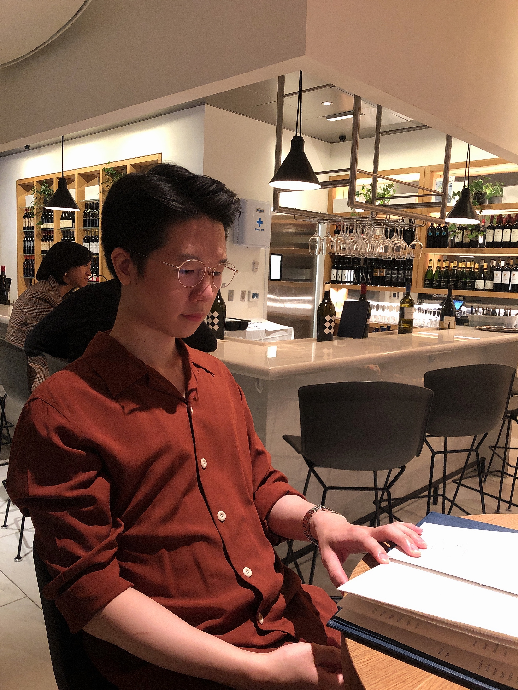

|
Hyung Won Chung
I work on Machine Learning research at OpenAI.
My research focuses on Large Language Models.
Prior to that, I was at Google Brain and did my PhD at MIT.
Email /
Google Scholar /
Twitter /
GitHub
|

|
UniMax: Fairer and more Effective Language Sampling for Large-Scale Multilingual Pretraining
Hyung Won Chung*, Noah Constant*, Xavier Garcia*, Adam Roberts, Yi Tay, Sharan Narang, Orhan Firat
ICLR 2023
|
The Flan Collection: Designing Data and Methods for Effective Instruction Tuning
Shayne Longpre, Le Hou, Tu Vu, Albert Webson, Hyung Won Chung, Yi Tay, Denny Zhou, Quoc V Le, Barret Zoph, Jason Wei, Adam Roberts
ICML 2023
|
Large Language Models Encode Clinical Knowledge
Karan Singhal, Shekoofeh Azizi, Tao Tu, S Sara Mahdavi, Jason Wei, Hyung Won Chung, Nathan Scales, Ajay Tanwani, Heather Cole-Lewis, Stephen Pfohl, Perry Payne, Martin Seneviratne, Paul Gamble, Chris Kelly, Nathaneal Scharli, Aakanksha Chowdhery, Philip Mansfield, Dale Webster, Greg S Corrado, Yossi Matias, Katherine Chou, Juraj Gottweis, Nenad Tomasev, Yun Liu, Alvin Rajkomar, Joelle Barral, Christopher Semturs, Alan Karthikesalingam, Vivek Natarajan
arXiv preprint arXiv:2212.13138.
|
BLOOM: A 176B-Parameter Open-Access Multilingual Language Model
BigScience Workshop (more than 300 authors).
arXiv preprint arXiv:2211.05100.
|
Scaling Instruction-Finetuned Language Models
Hyung Won Chung*, Le Hou*, Shayne Longpre*, Barret Zoph, Yi Tay, William Fedus, Eric Li, Xuezhi Wang, Mostafa Dehghani, Siddhartha Brahma, Albert Webson, Shixiang Shane Gu, Zhuyun Dai, Mirac Suzgun, Xinyun Chen, Aakanksha Chowdhery, Sharan Narang, Gaurav Mishra, Adams Yu, Vincent Zhao, Yanping Huang, Andrew Dai, Hongkun Yu, Slav Petrov, Ed H. Chi, Jeff Dean, Jacob Devlin, Adam Roberts, Denny Zhou, Quoc V. Le, Jason Wei*
arXiv preprint arXiv:2210.11416.
|
Transcending Scaling Laws with 0.1% Extra Compute
Yi Tay, Jason Wei, Hyung Won Chung , and 20 others.
arXiv preprint arXiv:2210.11399.
|
Challenging BIG-Bench Tasks and Whether Chain-of-Thought Can Solve Them
Mirac Suzgun, Nathan Scales, Nathanael Schärli, Sebastian Gehrmann, Yi Tay, Hyung Won Chung , Aakanksha Chowdhery, Quoc V. Le, Ed H. Chi, Denny Zhou, Jason Wei
arXiv preprint arXiv:2210.09261.
|
Language Models are Multilingual Chain-of-Thought Reasoners
Freda Shi, Mirac Suzgun, Markus Freitag, Xuezhi Wang, Suraj
Srivats, Soroush Vosoughi, Hyung Won Chung , Yi Tay, Sebastian Ruder, Denny Zhou, Dipanjan Das, Jason Wei
arXiv preprint arXiv:2210.03057.
|
Scaling Laws vs Model Architectures: How does Inductive Bias Influence Scaling?
Yi Tay, Mostafa Dehghani, Samira Abnar, Hyung Won Chung, William Fedus, Jinfeng Rao, Sharan Narang, Vinh Q. Tran, Dani Yogatama, Donald Metzler
arXiv preprint arXiv:2207.10551.
|
UL2: Unifying Language Learning Paradigms
Yi Tay, Mostafa Dehghani, Vinh Q. Tran, Xavier Garcia, Jason
Wei, Xuezhi Wang, Hyung Won Chung, Dara Bahri, Tal Schuster, Huaixiu Steven Zheng, Denny Zhou, Neil Houlsby, Donald Metzler
arXiv preprint arXiv:2205.05131.
|
What Language Model Architecture and Pretraining Objective Work Best for Zero-Shot Generalization?
Thomas Wang, Adam Roberts, Daniel Hesslow, Teven Le Scao,
Hyung Won Chung, Iz Beltagy, Julien Launay, Colin Raffel
ICML 2022
|
PaLM: Scaling Language Modeling with Pathways
Aakanksha Chowdhery, Sharan Narang, Jacob Devlin, Maarten Bosma,
Gaurav Mishra, Adam Roberts, Paul Barham,
Hyung Won Chung and 67 others
arXiv preprint arXiv:2204.02311.
|
Scaling Up Models and Data with t5x and seqio
Adam Roberts*, Hyung Won Chung*, Anselm
Levskaya*, Gaurav Mishra*, James Bradbury*,
arXiv preprint arXiv:2203.17189.
|
Scale Efficiently: Insights from Pre-training and Fine-tuning Transformers
Yi Tay, Mostafa Dehghani, Jinfeng Rao, William Fedus, Samira
Abnar, Hyung Won Chung, Sharan Narang, Dani Yogatama, Ashish Vaswani, Donald Metzler
ICLR 2022
|
Charformer: Fast Character Transformers via Gradient-based Subword Tokenization
Yi Tay, Vinh Q. Tran, Sebastian Ruder, Jai Gupta, Hyung Won Chung, Dara Bahri, Zhen Qin, Simon Baumgartner, Cong Yu, Donald Metzler
ICLR 2022
|
Do Transformer Modifications Transfer Across Implementations and Applications?
Sharan Narang, Hyung Won Chung, Yi Tay, William Fedus, Thibault Fevry, Michael Matena, Karishma Malkan, Noah Fiedel, Noam Shazeer, Zhenzhong Lan, Yanqi Zhou, Wei Li, Nan Ding, Jake Marcus, Adam Roberts, Colin Raffel
EMNLP 2021
|
Neural Data Augmentation via Example Extrapolation
Kenton Lee*, Kelvin Guu*, Luheng He*, Tim Dozat*, Hyung Won Chung*
arXiv preprint arXiv:2102.01335.
|
Rethinking embedding coupling in pre-trained language models
Hyung Won Chung*, Thibault Févry*, Henry Tsai, Melvin Johnson, Sebastian Ruder
ICLR 2021
|
Improving Multilingual Models with Language-Clustered Vocabularies
Hyung Won Chung*, Dan Garrette, Kiat Chuan Tan, Jason Riesa
EMNLP 2020
|
|
{kind=link}